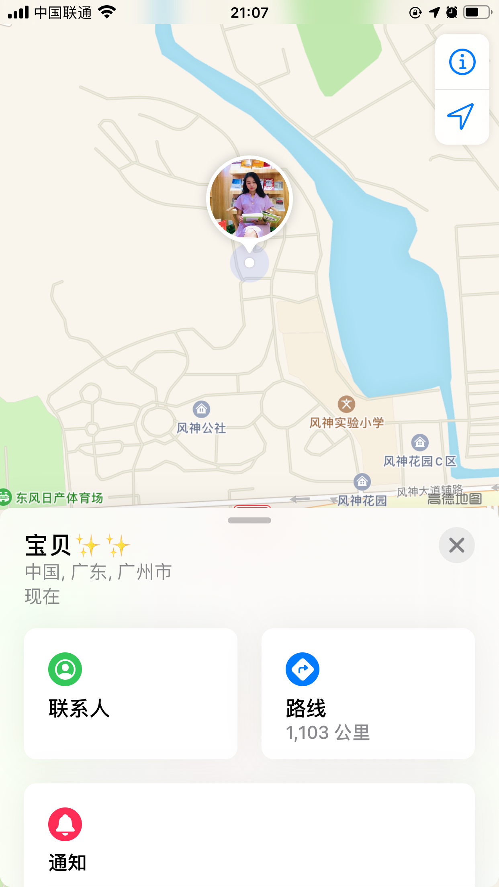

just there 和 MORE&MORE 相爱了:
今天你喜欢了6个抖音视频（单身女生心态变化、如果没有酒，何来唐诗300首、你觉得现在男生难相处吗、在线教学秀恩爱的人、别再挽留，再痛也要分手、分手哪来这么多理由）。
今天使用最多的APP是查找，每次都要点进去看你在哪个位置，准备发微博，但是没有勇气点发送。 伤心
心里空落落的...... 眼前都是记忆......

今天看到公司内部招聘信息，就很快跟招聘单位联系，希望把你推荐过去。这样或许我们还有机会重新在一起，很可惜，用人部门只需要内部调整的。失落......又定位了你，想知道你在干嘛，但是不会去问......
你是否有很多的问号？你应该有很多问题，你想不通，我也一样。
担心